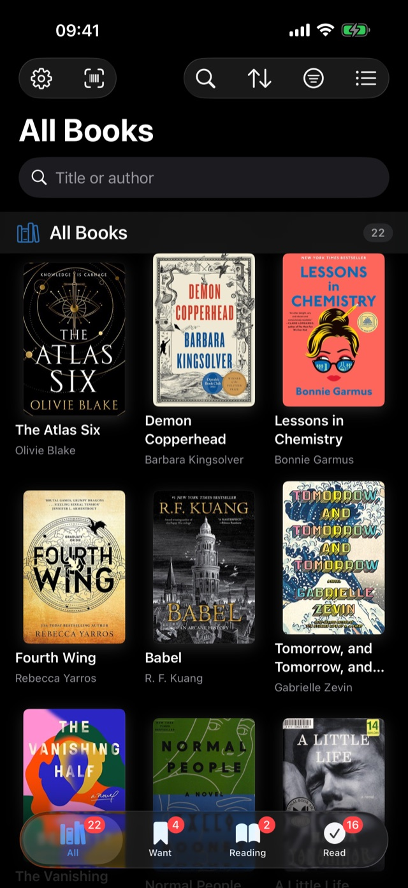

A book tracker with no ads, no account and no server of ours. Scan a
cover, keep the quotes, follow the series, hit the goal — and your
library never leaves your own iCloud.
There is no sign-up, no password and no BooksLove server holding your books. You open the app and it is already yours.
Your data, your iCloud
Your library lives on your device and syncs through your own private iCloud. We have no way to read it.
No ads. Not now, not later
No banners, no sponsored books, no advertising SDK — nothing between you and your shelves.
Private by default
Your shelves are private from the first launch. Nothing is published anywhere unless you deliberately share it.
Privacy
We would rather name every recipient than claim there are none
Plenty of apps say "we respect your privacy" and stop
there. Here is the whole list of everything outside your device that
receives anything at all, and what each one gets.
Who
What they receive
Apple iCloud
Your books, shelves, ratings and notes — stored in your private iCloud database, not ours
Google Books
The words you type, or the ISBN you scan. Never your library
Open Library
The words you type, or the ISBN you scan. Never your library
RevenueCat
An anonymous purchase identifier created by the app. No name, no email, no books
TelemetryDeck
Events like "a book was added" — never a title, an author, a note or a search term. You can switch this off in Settings
What the app never does
No advertising, and no advertising SDK in the app
No IDFA and no App Tracking Transparency prompt — we cannot track you across apps
No selling, renting or sharing of your reading data
No account, no password, no profile — nothing to leak
No reading of your library: search sends the words you type, never your shelves
What you can always do
Export everything to CSV or JSON, free, at any moment
Hide any single book from every shareable card
Turn off anonymous usage statistics in Settings → Privacy
Delete every trace from this device and from your iCloud
The app follows your system theme, scales with Dynamic
Type all the way up, and was built with VoiceOver from the first screen
rather than bolted on afterwards.
Full Dark Mode, or force light or dark independently of the system
Dynamic Type support across every screen, including the widgets
VoiceOver labels, Reduce Motion and high-contrast support
Every tap target at least 44 points, as Apple's guidelines require

Questions
The things people ask first
Is it really free?
Downloading and using BooksLove is free. Unlimited books, every
statistic, iCloud sync and full export are free forever and are never
placed behind a purchase — that is a written guarantee in the app, not
a launch promotion. There is an optional subscription for people who
want to support the work; it does not unlock the core of the app.
Do I need to create an account?
No. There is no sign-up, no password and no BooksLove server. The
app opens straight into your library. Syncing between your iPhone and
iPad happens through your own iCloud account, which you already have.
Can I move my library over from Goodreads?
Yes. Export a CSV from Goodreads, open it in BooksLove, and your
shelves, ratings, dates and reviews come across. You can re-import the
same file later — updates are merged instead of duplicated. The same
importer also reads The StoryGraph, LibraryThing, Bookmory, Tome,
Fable and Hardcover.
Full guide here.
What happens to my books if I stop using the app?
You take them with you. Export the whole library to a
Goodreads-compatible CSV or a complete JSON file in one tap, at any
time, without a subscription. The door out is as wide as the door in —
that is deliberate.
Does it work without an internet connection?
Yes. Your library is stored on the device, so reading, rating,
editing and logging sessions all work offline. Only searching the
catalogue and downloading covers need a connection, and changes made
offline sync when you are back online.
Are my shelves visible to anybody?
No. There is no public profile, no feed and nowhere to publish to.
Sharing only happens when you deliberately create a card and send it
yourself, and any single book can be marked so it never appears on one.
Which devices does it run on?
iPhone and iPad running iOS or iPadOS 17.6 and later. The same
library appears on both through iCloud, and there are Home Screen
widgets for the reading goal, the book you're on and recently added
books.
Are there book clubs or a social feed?
Not today. BooksLove is a personal reading tracker. If a social
layer is ever built, it will be something you opt into deliberately —
the private-by-default behaviour described above is not going to be
quietly reversed.
Start your most beautiful reading year yet
Free on the App Store.
No account, no ads, and your books stay yours.
Want a short email when something notable ships?
Ask to be added to the list
— no tracking pixels, no third-party mailing service, unsubscribe by replying.